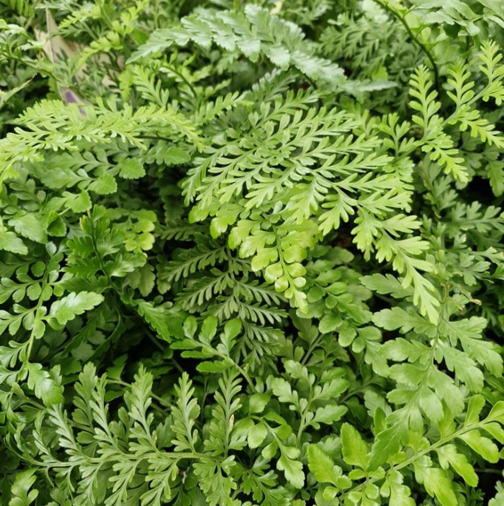
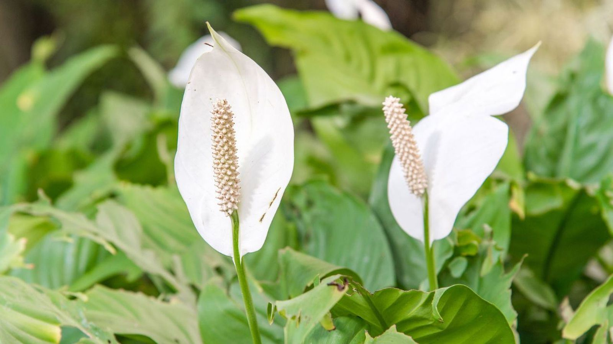
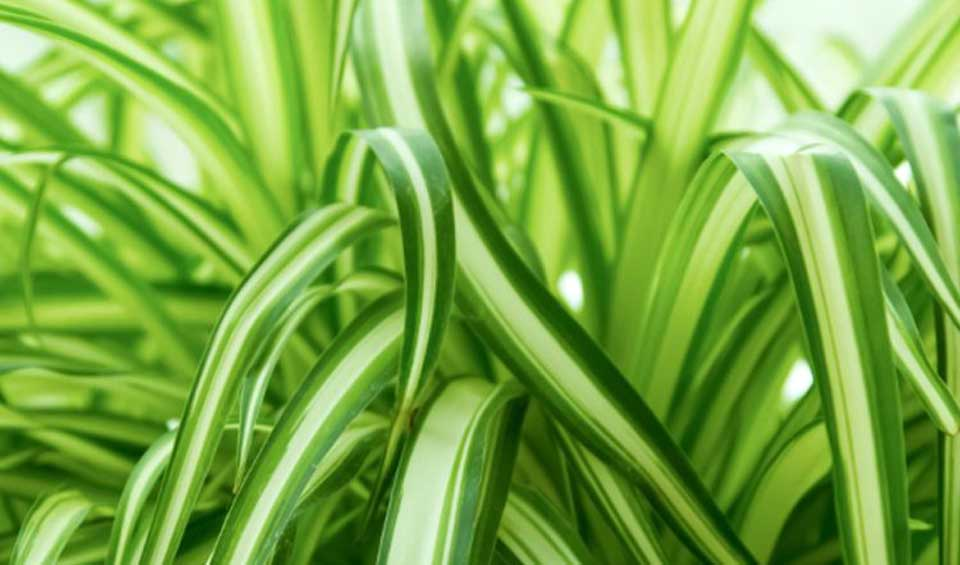
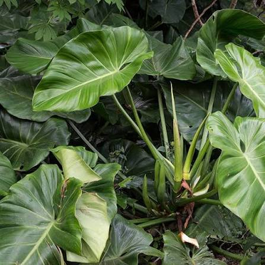
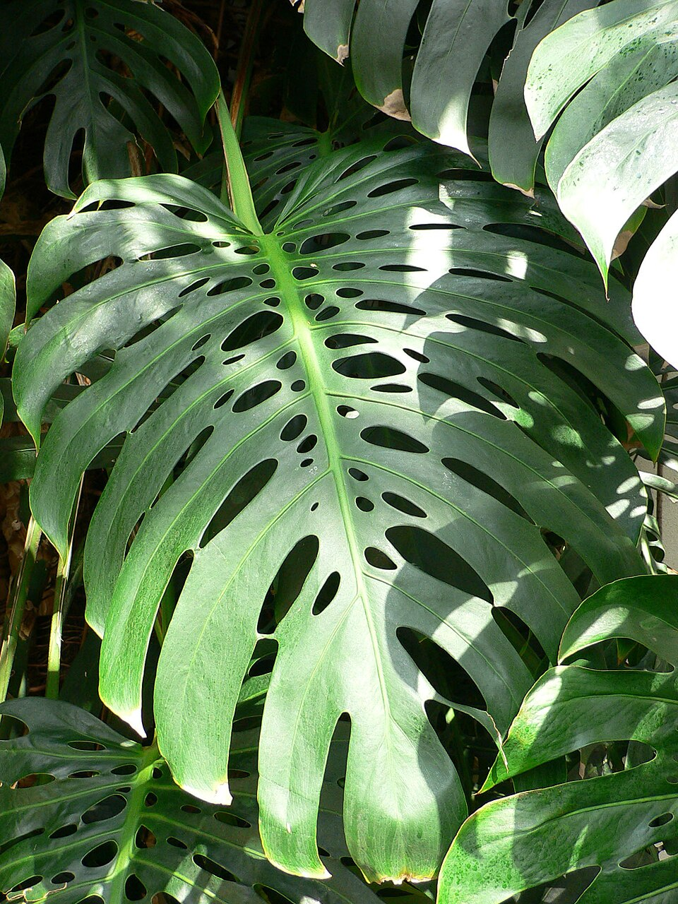
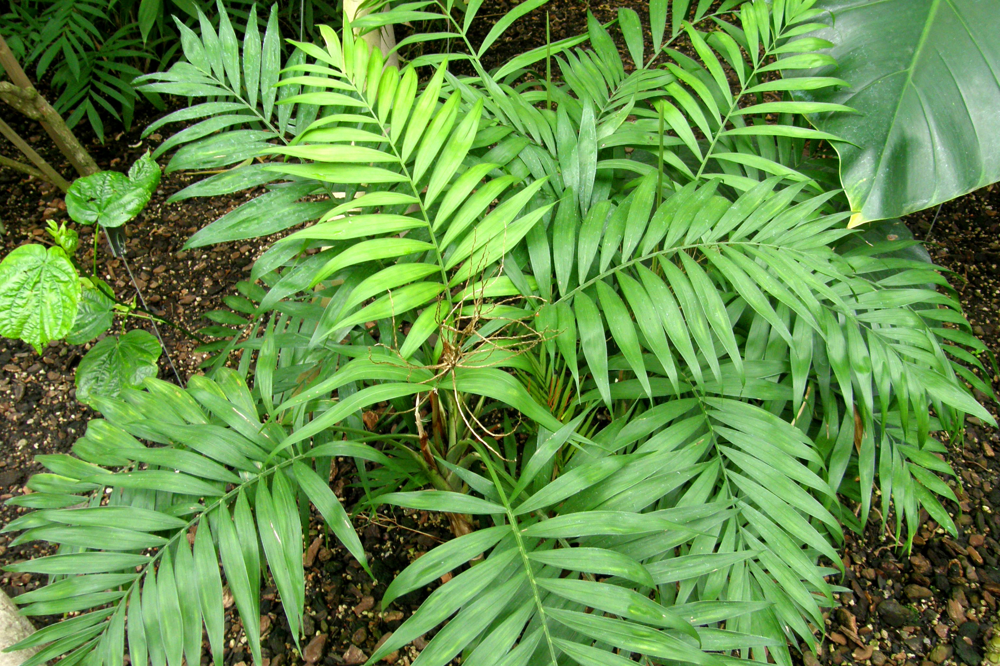
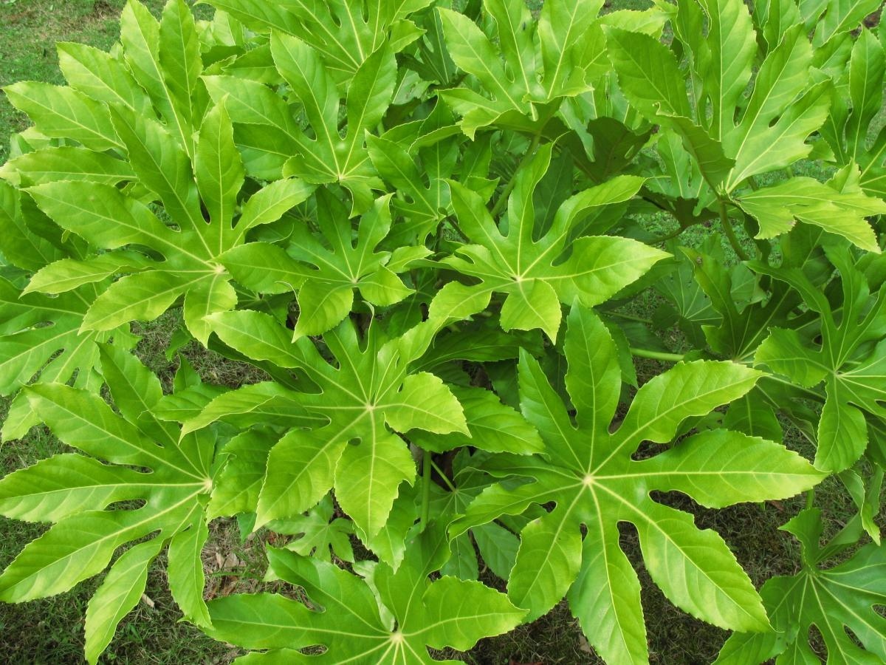
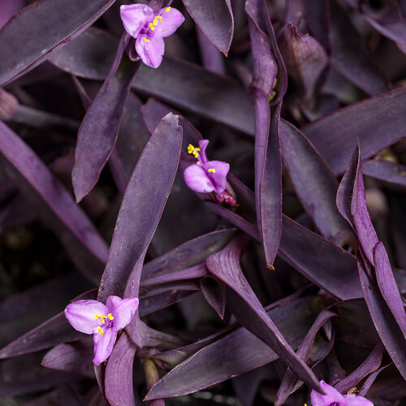

Cuidamos del medioambiente y de tu salud. Nuestros más de 150 m² de jardín vertical vivo purifican el aire de nuestra recepción en tiempo real.
CO₂ Filtrado desde instalación
Oxígeno Generado desde instalación
Toxinas Retenidas desde instalación
Toca cualquier planta para descubrir más sobre ella.














